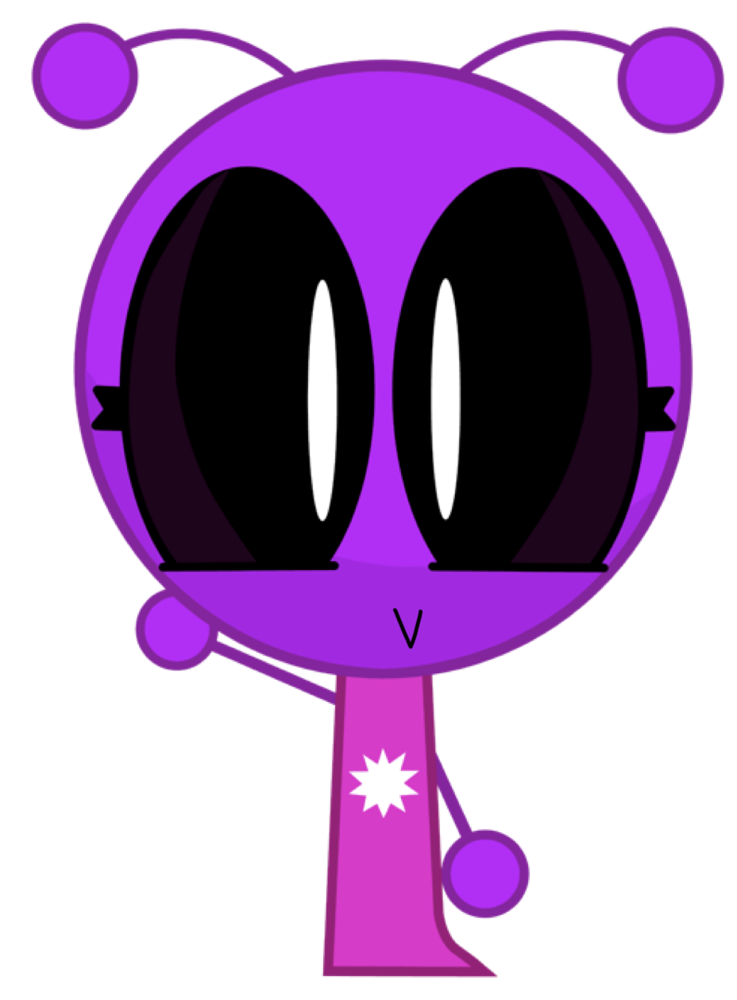
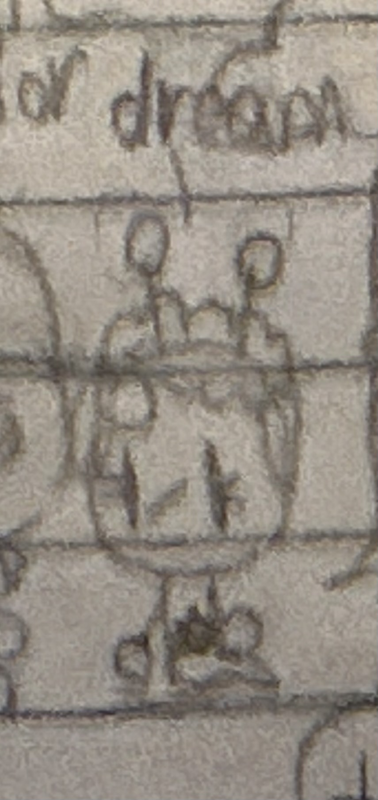

Dream


| Dream Berrison | |
|---|---|
| Character information | |
| Species | Alien |
| Gender | Female |
| Age | 6 |
| Occupation | Inventor |
| Family | The Berrison family |
| Older brother | Jstar Berrison |
| Older brother | Junior Berrison |
| Parents | Janicia and Corey Berrison |
| Residence | Starland, Planet Blue-Dust |
Overview
Dream Berrison is a six-year-old female alien and one of the main characters in The Incredible Adventures of Jstar (TIAOJ), also known as redJSR TIAOJ. She is Jstar Berrison's younger sister and Junior Berrison's older sister. Despite her young age, Dream is an inventor who has her own laboratory.
Appearance
Dream is associated with the color purple. Her current appearance and first appearance are shown in the character images above.
Personality and abilities
Dream is a young inventor with the ability to create technological inventions. She has her own laboratory where she works on her projects. Her interest in inventing makes her an important character in the technological side of the Planet Blue-Dust universe.
Inventions
Jbot
Jbot is a small, flying spherical artificial intelligence created by Dream as a gift for Jstar's seventeenth birthday. Jbot has a green-light scanner that can generate objects without a watermark. Jbot is charged in the kitchen.
Planey
Planey is another creation of Dream. She created Planey when she was four years old. Planey has a flat, two-dimensional rainbow appearance, no face, and an echoing, glitch-like voice.
Family
Dream is part of the Berrison family. Her parents are Janicia Berrison and Corey Berrison. She has two older brothers: Jstar, who is eighteen, and Junior, who is seven.
Relationships
- Jstar Berrison: Dream's eighteen-year-old older brother. She created Jbot as a gift for his seventeenth birthday.
- Junior Berrison: Dream's seven-year-old older brother.
- Janicia Berrison: Dream's mother.
- Corey Berrison: Dream's father.
- Planey: A character Dream created when she was four.
- Jbot: The AI assistant Dream created for Jstar's seventeenth birthday.